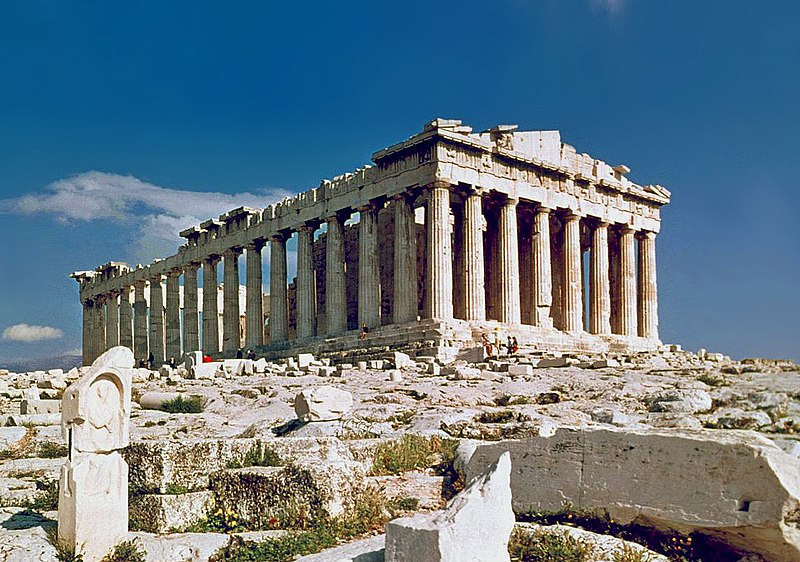
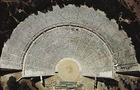

Lugares para Visitar
Parthenon
O Parthenon é um templo dedicado à deusa Atena, localizado na Acrópole de Atenas.
Museu da Acrópole
O Museu da Acrópole abriga uma vasta coleção de artefatos da Grécia Antiga.
Teatro de Epidauro
Um dos teatros mais bem preservados da Grécia Antiga, famoso por sua acústica excepcional.
Museu Nacional Arqueológico

O maior museu da Grécia, com uma incrível coleção de artefatos históricos e artísticos.